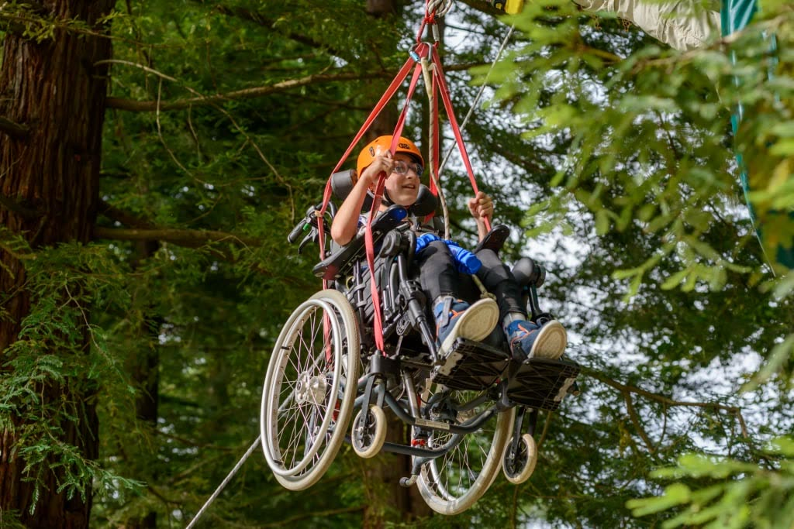

Dynamo Camp.
Il diritto alla felicità.
Programmi gratuiti di terapia ricreativa per bambini e ragazzi con patologie gravi o croniche, disturbi del neurosviluppo o disabilità, e per le loro famiglie.

La missione.
A Dynamo Camp il divertimento è una terapia: restituisce fiducia in se stessi e migliora la qualità di vita di chi ne ha più bisogno.
Il Camp.
Un’oasi naturale in provincia di Pistoia, e i City Camp in alcune delle principali città italiane: un ambiente stimolante e protetto in cui socializzare, sperimentare, divertirsi e affrontare la vita senza barriere. Dynamo Camp è membro di SeriousFun Children’s Network, la rete internazionale fondata nel 1988 da Paul Newman.
- Terapia ricreativa gratuita per bambini e ragazzi
- Accoglienza anche per famiglie, fratelli e sorelle
- Attività al Camp in Toscana e nelle città
Da completare con il team: il contributo di LAIF a Dynamo Camp.
Il valore di
costruire insieme.
Un ecosistema è anche un luogo di apprendimento: competenze di prodotto, integrazione e adozione si incontrano con problemi diversi.
Torna all’ecosistemaHai un processo che merita di funzionare meglio?
Raccontaci quale attività vuoi migliorare, chi è coinvolto e quali strumenti usate. Da qui definiamo il primo passo.
Parliamoci